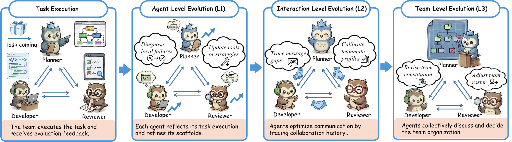

01研究背景与问题定义
多智能体把长任务分散给多个代理，减少了单个上下文负担；任务失败后，诊断却常被重新集中给一个分析器。把整队交错的执行链、消息与产物压成一个长输入，会失去局部操作语境。反过来，只让每个代理看自己的轨迹，又无法知道自己的假设怎样误导了下游成员。
Meta-Team 让执行时的分布式结构延续到任务后的学习：各代理保留本地上下文，再询问同伴补足依赖证据。改进对象也分层，分别作用于个人工作方式、成员之间的理解与协作协议，以及全队组织规则。中心创新是组织经验与归因方式，而不是单纯增加成员数量。
| 作用域 | 需要回答的问题 | 更新对象 |
|---|---|---|
| L1 个体 | 我应该观察、验证和报告什么 | 个人 scaffold |
| L2 交互 | 同伴知道什么、依赖什么、应怎样联系 | teammate profiles 与交互机制 |
| L3 团队 | 组织结构与共同规则是否适合任务 | 团队 roster 与共享 scaffold |
02方法与技术路线
团队先按当前配置完成任务，收到最终产物与评价后再开展协同反思。执行轨迹保持分区，讨论用于补足跨代理关系，修改则成为未来任务可复用的外部配置。
本地证据保留
代理回看自己的输入、假设、工具动作和交付，避免中央摘要抹去操作语境。
共同结果注入
所有成员看到最终交付与评分，知道哪些局部决定最终有效或失效。
协同归因
把本地行为与跨代理依赖连接起来；单次故障可同时揭示个人问题、接口误解与组织缺口。
L1 + L2
更新个人行为规则，以及怎样理解、查询、依赖同伴。
L3
更新团队共享规则与必要组织配置；下一任务用新配置执行。
本地上下文保真与全局认识如何同时得到
本地代理最了解自己当时看到了什么，能识别中央分析器难以复原的操作细节；但它不能仅凭最终分数确定责任。收到共同结果后，代理通过任务后交流核查自己的输出怎样被别人使用，弥合局部意图与全局后果的差距。
这种通信发生在经验分析阶段，服务于以后任务的配置更新。它不等于把本次执行重新无限讨论一遍，也不保证所有责任都能被客观确定：解释和修改建议仍由模型生成。
为什么交互层不只优化一张通信图
通信图说明谁可以联系谁，却不说明何时应该询问、该给出什么证据，以及应该相信同伴的哪一种能力。Meta-Team 更新 teammate profiles，让代理逐渐校准对同伴优势与局限的认识。
个体层的修改则可改变核查和汇报行为；团队层可改变共享协调规则乃至成员安排。三者并非互斥桶：一次错误交接既可能需要生产者增加验证，也可能需要接收者请求依据，还可能暴露团队缺少专门核查职责。
可复用产物与预算边界
演化产物在新任务中复用，部署仍受每题时间、消息和费用限制。预算反馈本身也可暴露组织冗余：团队可能减少重复检查，或在长上下文任务增加适当分工。
因此“成员更多”既不是收益的必要解释，也不是免费操作。在 LOCA-Bench 的演化中额外加入工作者，尤其有利于长上下文，但改变了组织与资源分配；泛化分析需要连同这些系统变化一起理解。
论文原始结构图 · 点击对照

03实验设计与结果分析
协同演化是否改善一个原本不够好的团队
| 比较 | 观察 |
|---|---|
| 初始 MAS 对单代理 | 九个评测列中有六列更差 |
| Meta-Team 对初始 MAS | Ansible +13.1 分；LoCoBench Feature +9.5 分 |
| Meta-Team 对最强 MAS 演化对照 MASFly | 平均 +6.3 分 |
初始多代理常输给单代理，说明复杂组织本身可能制造错误。演化后在多个任务上改善，更合理的解释是修复组织与行为失配，而不是把任何多代理系统都视作强基线。这里六个基准包含多个任务列，不能把“九列”误写成九个独立基准。
本地与协同信息的价值怎样验证
| 检验 | 控制方式 | 结论 |
|---|---|---|
| 经验组织 | 整体中央分析 / 仅本地分析 / 本地加讨论 | 协同条件优于另外两种 |
| 移除 L1 | 其他演化尺度保留 | Ansible −5.4；ResearchRubrics −7.9 分 |
| 迁移 | 96K 上下文演化到其他长度；Python 演化到 C/C++/Java | 大部分长度与跨语言任务保持优势 |
中央与分区分析都能改善初始 MAS，却不及协同组织，支持“局部保真与跨代理认识需要结合”。L1 的最大损失说明个体行为仍是直接杠杆；交互和团队层的作用随任务变化，不能把所有收益都归因于组织重构。
论文另把演化预算压到主设置的三分之一，并冻结产物后按相同部署限制评估，观察到较好的性能—费用关系。这支持有限预算下的实用性，但部署平均费用并非演化全过程总费用。
04贡献、局限与综合评价
贡献是让学习结构匹配执行结构
分布式任务不能只用一个标量分数或一份全局摘要来诊断。Meta-Team 通过本地上下文与跨代理证据交换，使谁做了什么、别人怎样使用它更可见；随后把更新写入适当作用域。这种经验组织原则比特定团队角色更具迁移价值。
团队更新的正确作用域也需要证据
一次失败可以触发三层修改，但这给了系统多种同时纠偏的自由度。最终分数提高并不能说明它把责任放在了最合适的层：增加个人核查也许补偿了交互接口缺陷，增加工作者也许掩盖了分工不清。若要证明多尺度归因，应该保存修改针对的故障假设，并在留出情形中只启用对应层，观察能否选择性减少预期故障。这样才能区分“足够多的修改最终有效”与“团队理解了错误怎样跨成员传播”。
更好的讨论，还是更多诊断计算
协同条件也可能得到更多分析调用、更丰富的信息和更长讨论时间。对组织原则的支持来自控制消融，但若要精确归因，还应让中央分析器和协同团队获得相同诊断预算，以及相同证据可见性。
尤其需要区分“问到了中央摘要遗漏的信息”和“分布式推理本身更有效”。可以给中央分析器同样的按需证据检索工具，再比较错误定位、修改有效率及留出任务收益。若差距缩小，信息访问接口可能是关键；若仍存在，协作分析本身的价值更强。现有证据支持经验组织应与任务结构相匹配，对各种团队规模的最优分析方式尚无统一答案。